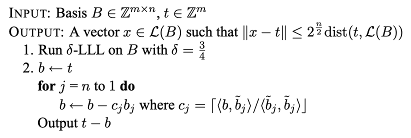

CVP
CVP is a particularly important issue in Lattice-based cryptography.
The basic definition of the problem is as follows: Given a set of bases and vectors \(\mathbf{v}\) for \(L\), find the nearest vector to \(\mathbf{v}\) on \(L\).
Algorithms
Babai's nearest plane algorithm
The algorithm inputs a set of lattice \(L\) (rank is \(n\)) base \(B\) and a target vector \(\mathbf{t}\) to output an approximate solution to the CVP problem.
- The approximation factor is \(\gamma = 2^{\frac{n}{2}}\)
Specific algorithm:

- Where \(c_j\) is the rounding of the coefficients in the Gram-schmidt orthogonalization, which is the rounding of \(proj_ {b_j}(b)\).
For the personal understanding of the second step of the algorithm: find a linear combination closest to \(\mathbf{t}\) in the base \(B\) after the lattice basis and the orthogonalization.
Babai’s Rounding Technique
This algorithm is a variant of Babai's nearest plane algorithm.
The steps can be expressed as:
N = rank(B), w = target
- \(B' = LLL(B)\)
- Find a linear combination \([l_0, \ldots, l_N]\) such that \(w = sum(l_i * b'_i)\).
- (\(b'_i\) is the
i-th vector in theLLL-reduced basisB') - Round each \(l_i\) to it's closest integer \(l'_i\).
- Result \(v = sum(l'_i * b'_i)\)
Related information
Hidden number problem
The definition of HNP is as follows:
Given the prime \(p\), many \(t \in \mathbb{F}_p\) and each corresponding \(MSB_{l,p}(\alpha t)\), find the corresponding \(\alpha\).
- \(MSB_{l,p}(x)\) means any integer \(u\) that satisfies \(|(x \mod p) - u| \le \frac{p}{2^{l+1}}\), which is approximately \(l\) most significant digits of \(x \mod p\).
According to the description in Reference 3, when \(l \approx \log^{\frac{1}{2}}{p}\), the following algorithm can solve HNP:
We can turn this problem into a CVP problem on the lattice generated by the matrix:
We need to find the nearest vector from \(\mathbf{u}=(u_1, u_2, \ldots, u_{n}, 0)\) on the lattice, so here we can
use Babai's nearest plane algorithm. Finally we can get a set of vectors \(\mathbf{v}=(\alpha \cdot t_1 \mod p, \alpha
\cdot t_2 \mod p, \dots, \frac{\alpha}{2^{l+1} })\), which calculates \(\alpha\).
Example
BCTF 2018 - guess_number
The topic provides server-side code:
import random, sys
from flag import FLAG
import gmpy2
def msb(k, x, p):
delta = p >> (k + 1)
ui = random.randint(x - delta, x + delta)
return ui
def main():
p = gmpy2.next_prime(2 ** 160)
for _ in range(5):
alpha = random.randint(1, p - 1)
t = u = []
k = 10
for i in range(22):
t.append(random.randint(1, p - 1))
u.append(msb(k, alpha * t[i] % p, p))
print(str(t))
print(p(u))
guess = input('Input your guess number: ')
guess = int(guess)
if guess != alpha:
exit(0)
if __name__ == "__main__":
main()
print(FLAG)
As you can see, the program performs a total of 5 rounds. In each round, the program generates a random \(\alpha\) and 22 random \(t_i\). For each \(t_i\), the program will take \(u_i = MSB_{10,p}(\alpha\cdot{t_i\mod{p}})\) and send it to the client. We need to calculate the corresponding \(\alpha\) based on the provided \(t_i\) and \(u_i\). As you can see, the problem is a typical Hidden number problem, so you can use the above algorithm to solve:
import socket
import ast
import telnetlib
# HOST, PORT = 'localhost', 9999
HOST, PORT = '60.205.223.220', 9999
s = socket.socket()
s.connect((HOST, PORT))
f = s.makefile('rw', 0)
def recv_until(f, delim='\n'):
buf = ''
while not buf.endswith(delim):
buf += f.read(1)
return buf
p = 1461501637330902918203684832716283019655932542983
k = 10
def solve_hnp(t, u):
def babai(A, w):
A = A.LLL(delta=0.75)
G = A.gram_schmidt()[0]
t = w
for i in reversed(range(A.nrows())):
c = ((t * G[i]) / (G[i] * G[i])).round()
t -= A[i] * c
return w - t
# http://www.isg.rhul.ac.uk/~sdg/igor-slides.pdf
M = Matrix(RationalField(), 23, 23)
for i in range(22):
M[i, i] = p
M[22, i] = t[i]
M[22, 22] = 1 / (2 ** (k + 1))
closest = babai(M, vector(u + [0]))
return (closest[-1] * (2 ** (k + 1))) % p
for i in range(5):
t = ast.literal_eval(f.readline().strip())
u = ast.literal_eval(f.readline().strip())
alpha = solve_hnp(t, u)
recv_until(f, 'number: ')
s.send(str(alpha) + '\n')
t = telnetlib.Telnet()
t.sock = s
t.interact()